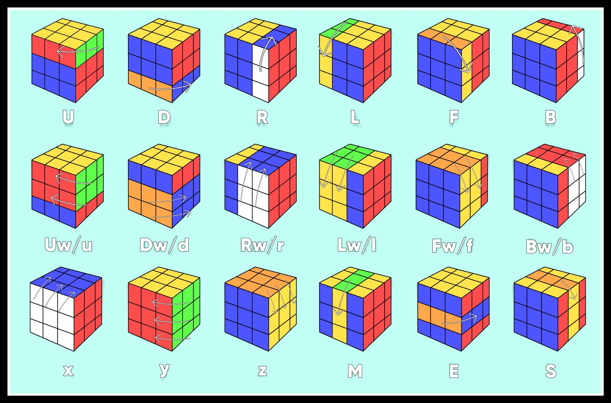
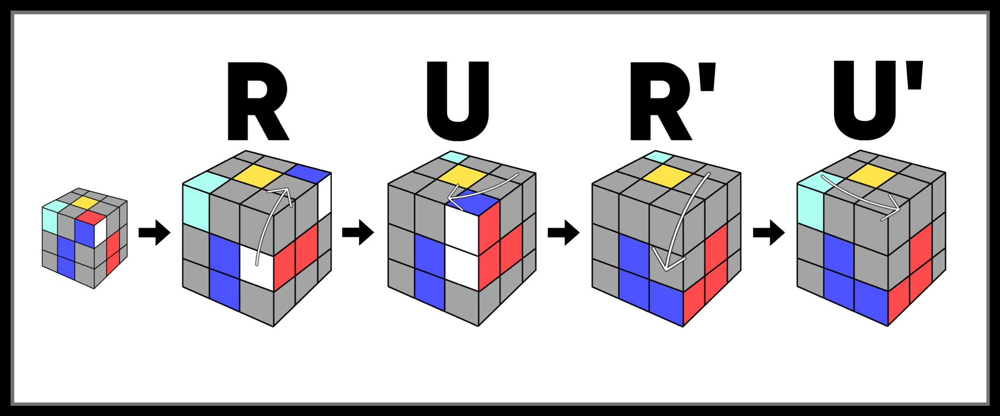

Cube Notation and Algorithms
Algorithms are the most important part of solving a rubik's cube because without them, it would be like trying to navigate a dense jungle without a map. To effectively perform algorithms, you would need to memorize the language of cubing; aka "Cube Notation".
*A Chart of Every Recognized Twist and Turn

*Does not include reverse / prime or double turns.
Cube Notation
Cube Notation is the language of cube algorithms. Reading cube notation is actually quite easy, for it is mostly just the first letter of the layer you are turning but capitalized.
For example: if you want represent the clock-wise turn of the Top layer in cube notation, We write "U" because U means up. On the other side, if we want to write the top layer turning counter-clockwise, we write U' which means U prime / reverse.
Begginner Algorithms
Known Simply as... the "sexy" move, this set of moves is an important algorithm for cubers of almost any solving-method. Its may uses include inserting corners, Fixing last layer corners for begginners, and being a part of many important algorithms. ⠀⠀⠀⠀⠀⠀⠀⠀⠀⠀⠀⠀⠀⠀⠀⠀⠀⠀⠀⠀⠀⠀⠀⠀⠀⠀⠀⠀⠀⠀⠀⠀⠀⠀⠀⠀⠀⠀⠀⠀⠀⠀⠀⠀⠀⠀⠀⠀⠀⠀⠀⠀⠀⠀⠀⠀
A mirrored version of the move ( L' U' L U ) exists and is basically just the same as the algorithm above but with the left hand. The move U, plus the normal algorithm, plus the turn "y", and the left version of the algorithm form another set of moves that can be used to insert edges into their correct spot. ⠀⠀⠀⠀⠀⠀⠀⠀⠀⠀⠀⠀⠀⠀⠀⠀⠀⠀⠀⠀⠀⠀⠀⠀⠀⠀⠀⠀⠀⠀⠀⠀⠀⠀⠀⠀⠀⠀⠀⠀
Above is the steps for performing this algorithm. The single highlighted aquamarine corner is there to show the importance of performing the last move, especially in last layer.

Though longer than other begginner algorithms, this set of moves is stil easy to memorize. Like displayed in the chart above, this algorithm is used to fix swapped edges. The example above shows that blue and orange are correct, but red and green are swapped.

The longest yet most repetitive algorithm here, these moves are used to fix corners that aren't in the correct place. If there is only one correct corner, perform the algorithm with the corner facing you and is on the left, as shown above, until all corners are in the right spot. If there are none, perform the algorithm on any side until one or all corners are fixed.